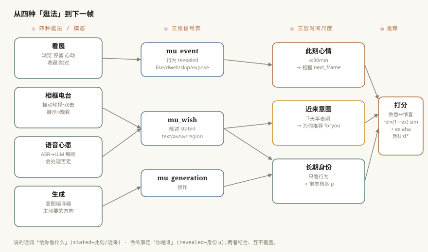
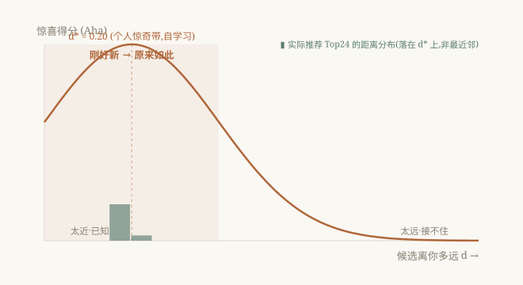

找到「原来如此」,而非最像你的Finding the Aha, Not the Nearest
审美推荐通常被当作"找最相似"的问题,但真正在一幅画前打动你的,往往不是最像你口味的那幅,而是带来「原来如此」的那幅——新得足以惊喜,又稳得能被接住。我们提出 aha:一个美术馆级系统,把作品与用户嵌进同一张可解释的 12 维审美流形(世界观 2 维、绘画语言 7 维、情绪 VAD 3 维)。8000+ 幅画由视觉语言模型(VLM)沿这些轴定位,每个用户由其行为嵌入同一空间,使人与大师可直接算余弦距离。推荐用一个「熟悉↔惊喜」可调的混合:相似度项 + 倒 U「惊奇带」项(承自 Berlyne);四种交互模态(看展、相框电台、语音心愿、生成)经三层时间尺度(此刻心情、近来意图、长期身份)整合,使陈述偏好永不覆盖揭示偏好。我们还给出一套可证伪的离线评估与一个诚实的发现:标准的"下一次点击"准确率会系统性地惩罚 serendipity,且用户天生分"口味一致"与"爱探索"两类、需要相反策略——这促使我们用成熟度门控的诚实度与用户可控旋钮,而非赌一个全局模型。FILL:用户研究主结论一句 我们开源评估台与知识图谱切片。
Aesthetic recommendation is usually framed as similarity matching, yet what delights a viewer before a painting is rarely the most similar work but the one that produces an aha — novel enough to surprise, anchored enough to be understood. We present aha, a museum-scale system that embeds both artworks and users in a single, interpretable 12-dimensional aesthetic manifold spanning worldview (2D), pictorial language (7D), and affect (valence–arousal–dominance, 3D). Over 8,000 paintings are positioned by a vision–language model; each user is embedded in the same space from behaviour, making people and masters directly cosine-comparable. Recommendation combines an inverted-U "surprise-band" term (after Berlyne) with a similarity term under a user-tunable familiar↔surprise control, and integrates four modalities — browsing, an ambient "radio" frame, spoken wishes, and generation — across three time scales (momentary mood, recent intent, long-term identity), so that stated preferences never overwrite revealed ones. We contribute a falsifiable offline harness and an honest finding: next-item accuracy systematically penalizes the very serendipity the system optimizes for, and users split into "consistent" and "exploratory" types demanding opposite strategies — motivating maturity-gated confidence and explicit user control over a single global model. FILL: user-study headline. We release the harness and a slice of the knowledge graph.
1引言Introduction
站在一幅打动你的画前,问"为什么"。答案很少是"因为它最像我已经喜欢的"。更多时候,是一记小小的认出——"哦,原来还能这样"——一幅新得足以惊喜、又稳得能被理解的作品。实验美学给这个形状起了名字:Berlyne 的倒 U——偏好在中等新异处达到峰值,而非最大熟悉处。然而大多数艺术/审美推荐都在优化相似度,从而把让看画值得的那种体验优化掉了。
我们主张审美推荐需要三样它通常缺失的东西:(i) 一种人与作品共处同一可解释空间的表示,使"什么适合你"成为几何陈述而非黑箱分数;(ii) 一种能刻意瞄准惊奇带——近得能懂、远得够新——而非最近邻的打分;(iii) 对一个事实的诚实面对:我们惯用的指标根本看不见 serendipity。
本文介绍 aha(已部署,aha.yishujia.art),围绕这三点构建。贡献:(1) 人画共享、可解释的审美流形(§3);(2) 熟悉↔惊喜混合 + 多模态信号经三层时间尺度整合(§4–5);(3) 一套诚实评估(§6),报告一个"负但有启发"的结果。我们刻意不声称在准确率基准上击败基线——在当前规模这站不住脚,且我们将论证它部分地不是重点。
Stand before a painting that moves you, and ask why. The answer is rarely "because it is most similar to what I already like." More often it is a small jolt of recognition — "oh, so this is possible too" — a work novel enough to surprise yet anchored enough to be grasped. Experimental aesthetics names this shape: Berlyne's inverted-U, where preference peaks at intermediate novelty rather than maximal familiarity. Yet most art recommenders optimize similarity, and thereby optimize away the very experience that makes looking at art worthwhile.
We argue aesthetic recommendation needs three things it usually lacks: (i) a representation in which people and artworks live in the same interpretable space, so that "what fits you" is geometric rather than opaque; (ii) a scoring rule that can deliberately target the surprise band — close enough to understand, far enough to be new — rather than the nearest neighbour; and (iii) an honest reckoning that the metrics we usually optimize cannot see serendipity at all.
This paper presents aha (deployed, aha.yishujia.art). Contributions: (1) a shared, interpretable aesthetic manifold (§3); (2) a familiar↔surprise recommender with multi-modal signals over three time scales (§4–5); (3) an honest evaluation (§6) reporting a negative-but-instructive result. We deliberately do not claim to beat baselines on accuracy; at our scale that would be unsupportable and, we argue, partly beside the point.
2相关工作Related Work
视觉艺术推荐(最近的同行)。 最接近的工作是 Yilma 与 Leiva:他们从文本/视觉特征及其融合中学习绘画的潜在(latent)语义表示做个性化推荐 [Yilma & Leiva 2023],并把视觉艺术推荐系统(VA RecSys)推到疗愈、情绪导向场景——推荐艺术以缓解重症监护后综合征(PICS),用专家策展对照、150 人用户研究验证 [Yilma 等 2024]。我们在三处不同:(i) 可解释 vs 潜在:不用潜在嵌入,而用显式、轴对齐的审美坐标(世界观/语言/情绪),距离、分区与推荐本身都可读;(ii) 人画共享空间:把用户嵌进与作品、大师质心同一空间,得到可算余弦的"本命画家"与 48 原型,而非仅物品嵌入;(iii) serendipity 优先于相关性:以倒 U 惊奇为核心,并诚实剖析为何准确率指标惩罚它。他们以情绪/疗愈为旨的框架,正启发了我们的情绪(VAD)层与低唤起"安静"频道;他们的大规模用户研究也是我们(较小,§6.5)研究正视的标杆。
艺术知识图谱与语境视觉特征。 Castellano 等构建 ArtGraph(基于 WikiArt 与 DBpedia),把 KG 嵌入注入深度模型以提升细粒度艺术属性分类 [Castellano 等 2021, 2022]。我们同样融合结构化知识与读图,但指向共享审美流形内的推荐而非分类:图谱的几何本身就是推荐空间,用户居于其中。
文化遗产多模态知识图谱。 一条日盛的线为遗产管理/检索/问答构建多模态 KG [Huang 等 2023],含中国艺术资源:WuMKG——含领域本体、印章/题材抽取与跨模态检索/问答的中国书画多模态 KG [Wan 等 2024],以及面向非遗的 CICHMKG [2023]。我们的图谱同享中国艺术域(如倪瓒、八大山人)与多模态,但建于审美本体(世界观/语言/情绪轴),用于把用户嵌入图谱的个性化、serendipitous 推荐,而非编目、检索或问答。这也让我们系统的"资源版"天然适配 Heritage Science 这类期刊。
计算美学、艺术情绪、serendipity、冷启动。 不同于预测图像审美质量 [Datta 2006] 或学习风格嵌入 [Karayev 等 2014],我们建人画共享、可解释的坐标系;艺术的情绪响应有专门资源(如 ArtEmis 的 45.5 万条艺术情绪标注 [Achlioptas 等 2021]),启发我们的 VAD 层。超越准确率的目标长期被认为更影响满意度 [McNee 2006; Kotkov 2016],而 serendipity 的度量尤难 [Ge 等 2010],通常需用户判断。Berlyne 倒 U [1971] 为惊奇带奠基,我们加证据:留一法准确率与它反相关。最后,推荐须调和用户陈述(显式)与揭示(隐式行为 [Hu 等 2008])偏好、并熬过冷启动 [Schein 等 2002];我们用三层时间尺度分开二者、按成熟度门控置信,把不确定性呈现给用户而非隐藏。
Visual art recommendation (closest prior work). Yilma and Leiva learn latent semantic representations of paintings from textual and visual features and their fusion for personalised recommendation [Yilma & Leiva 2023], and extend visual-art recommender systems to therapeutic, affect-oriented settings — recommending art to mitigate post-intensive-care syndrome (PICS), validated against expert curation in a 150-participant study [Yilma et al. 2024]. We differ on three axes: (i) interpretable vs. latent — an explicit, axis-aligned aesthetic coordinate system (worldview/language/affect) makes distances, regions, and recommendations legible; (ii) a shared user–artwork space — users are embedded with artworks and master centroids, yielding cosine-comparable "soulmate" artists and 48 archetypes, not only item embeddings; (iii) serendipity over relevance — we centre an inverted-U surprise objective and analyse why accuracy metrics penalize it. Their affect/wellbeing framing motivates our affective (VAD) layer and low-arousal "calm" channel; their large user studies set a bar our (smaller, §6.5) study acknowledges.
Art knowledge graphs & contextual visual features. Castellano et al. build ArtGraph (WikiArt + DBpedia) and inject KG embeddings into deep models to improve fine-art attribute classification [Castellano et al. 2021, 2022]. We also fuse structured knowledge with visual reading, but toward recommendation inside a shared aesthetic manifold: the graph's geometry is the recommendation space, and users inhabit it.
Cultural-heritage multimodal knowledge graphs. A growing line builds multimodal KGs for heritage management, retrieval, and QA [Huang et al. 2023], including Chinese-art resources: WuMKG, a Chinese painting-and-calligraphy multimodal KG with a domain ontology, seal/subject extraction, and cross-modal retrieval/QA [Wan et al. 2024], and CICHMKG for intangible heritage [2023]. Ours shares the Chinese-art domain (e.g., Ni Zan, Bada Shanren) and multimodality, but rests on an aesthetic ontology (worldview/language/affect) for personalised, serendipitous recommendation with users embedded in the graph, not bibliographic organisation or QA — positioning a resource-framed version for venues such as Heritage Science.
Computational aesthetics, art-emotion, serendipity, cold-start. Beyond predicting aesthetic quality [Datta 2006] or learning style embeddings [Karayev et al. 2014], we build an interpretable system shared by artworks and people; the affective response to art has dedicated resources (e.g., ArtEmis's 455K emotion attributions [Achlioptas et al. 2021]) motivating our VAD layer. Beyond-accuracy objectives have long mattered for satisfaction [McNee 2006; Kotkov 2016], and serendipity is especially hard to measure [Ge et al. 2010], usually needing user judgement. Berlyne's inverted-U [1971] grounds our band; we add evidence that LOO accuracy is anti-correlated with it. Finally, recommenders must reconcile stated (explicit) and revealed (implicit-feedback [Hu et al. 2008]) preferences and survive cold-start [Schein et al. 2002]; we separate these into time scales and gate confidence by maturity.
3共享审美流形A Shared Aesthetic Manifold
3.1 三个可观测层(12 维)3.1 Three observable layers (12-D)
每幅画与每个用户都是 12 维流形上的一点,由三个有心理学与艺术史依据的层构成:世界观(2 维)——"再现→表现"轴(x:忠实摹写→主观/抽象)正交于"结构→感知"轴(y:秩序/几何→气氛/光色/瞬间);绘画语言(7 维)——构图、空间、造型、光影、色彩、笔触、边缘,各为 0–1;情绪(3 维)——愉悦、唤起、控制(VAD)。两条世界观轴是其它层投影其上的"挂载点";我们持"风格是这些层的投影"这一本体立场。
Every artwork and user is a point in a 12-D manifold of three motivated layers: worldview (2D) — a representation→expression axis orthogonal to a structure→sensation axis; pictorial language (7D) — composition, space, form, light, colour, brushwork, edge, each 0–1; affect (3D) — valence, arousal, dominance. The worldview axes are a low-dimensional "mounting point" onto which other layers project; we take the stance that style is a projection of these layers.
3.2 作品:VLM 大规模标注3.2 Artworks: VLM extraction at scale
一个视觉语言模型(MiMo)读每幅画并沿上述层打分,以锚定范例校准(如照相写实 ≈ 0.10 的再现轴;睡莲式弥漫光 ≈ 0.93 的感知轴)。8106 幅"入选"作品的覆盖率:世界观 89%、情绪(VAD)~100%、绘画语言 ~100%。FILL:VLM 轴与人工标注子集的一致性/相关
A VLM (MiMo) reads each painting and scores the layers, calibrated against anchored exemplars (photorealism ≈ 0.10 on representation; diffuse Water-Lilies light ≈ 0.93 on sensation). Across 8,106 curated works: worldview 89%, affect ~100%, pictorial language ~100% coverage. FILL: VLM–human agreement on a held-out subset.
3.3 用户:同一空间,源自行为3.3 Users: same space, from behaviour
用户质心 μ 是其参与作品向量的掩码加权均值(权重:心动/收藏 = 3,停留/生成 = 2,打开 = 1,浏览 = 0.3,跳过 = −1)。掩码让只部分向量化的作品仍能在其拥有的维度上贡献。因为 μ 与作品、大师质心同处 12 维,"契合"就是距离,"本命画家"就是最近的大师(图 1)。
A user centroid μ is the masked, weighted mean of engaged-work vectors (like/collect = 3, dwell/generate = 2, open = 1, view = 0.3, skip = −1). Masking lets partially-vectorized works still contribute. As μ shares the 12-D space with artworks and master centroids, "fit" is a distance and the soulmate artist is the nearest master (Fig. 1).
3.4 距离、原型、"风格是投影"3.4 Distance, archetypes
用子空间加权距离 dKG = 0.5·dWV + 0.3·dLang + 0.2·dAff(各子空间归一到 [0,1])。6 个世界观区 × 8 个二元亚型 = 48 种审美原型,是连续空间上一层易读的"审美 MBTI"。
We use dKG = 0.5·dWV + 0.3·dLang + 0.2·dAff (each subspace in [0,1]). Six worldview regions × eight binary sub-types = 48 aesthetic archetypes, a legible "MBTI-for-taste" over a continuous space.

4推荐 = 熟悉 ↔ 惊喜Recommendation as Familiar ↔ Surprise
4.1 倒 U 惊奇带4.1 The inverted-U surprise band
惊喜项 aha(d) = exp(−(d−d*)²/2σ²),σ = 0.20,峰在距离 d*——用户个人的"惊奇带",自学习为接受作品到 μ 的平均跳跃距离(clamp 到 [0.15, 0.6]);数据足的用户 d* ≈ 0.19–0.23。太近(已知)与太远(接不住)都低分,"刚好新"最高。图 2 给出曲线 + 某真实用户 Top24 推荐的实际距离分布(0.158–0.206),它们簇在 d* 上、而非最近邻。
The surprise term is aha(d) = exp(−(d−d*)²/2σ²), σ = 0.20, peaking at d\* — the personal surprise band, self-learned as the mean accepted-jump distance (clamped to [0.15, 0.6]); for data-rich users d* ≈ 0.19–0.23. Fig. 2 shows the curve with a real user's top-24 distances (0.158–0.206) clustering on d\*, not at the nearest neighbour.
4.2 可调的熟悉–惊喜混合4.2 A tunable familiar–surprise blend
关键(由 §6 促成):生产打分不是纯倒 U。我们混入相似度项:
探索度 ex 就是面向用户的"熟悉↔惊喜"滑块;默认随数据成熟度走 ex = clamp(0.25 + 0.45·maturity, 0.2, 0.7)(冷启动偏熟悉/相似——低数据下唯一打过随机的内容信号;成熟后才偏惊喜)。表 2 证明可控:ex = 0.2 → 推荐距离中位 0.112(贴近 μ),ex = 0.85 → 0.184(落在带上)。
Crucially (motivated by §6), production scoring is not pure inverted-U; we mix in similarity (formula above). The explore weight ex is the user-facing familiar↔surprise slider; its default tracks maturity, ex = clamp(0.25 + 0.45·maturity, 0.2, 0.7) (cold start leans familiar — the only content signal beating random at low data). Table 2: ex = 0.2 → median distance 0.112; ex = 0.85 → 0.184.
4.3 来自语音心愿的近来意图4.3 Recent intent from spoken wishes
一句心愿("想看安静点的""别太安静,来点有力的")由 ASR 转写、再由 LLM 解析成目标(门派、愉悦、唤起),能处理否定(关键词法会答反)。近期心愿(45 天窗、7 天半衰期)推动锚点:μ_eff = clamp(μ + γ·conf·(target − μ)),只动被提到的维度(γ = 0.6),绝不改长期身份 μ。
A spoken wish is transcribed by ASR and parsed by an LLM into a target (region, valence, arousal), handling negation that keyword matching reverses. Recent wishes (45-day window, 7-day half-life) shift the anchor: μ_eff = clamp(μ + γ·conf·(target − μ)) on mentioned dimensions only (γ = 0.6), never altering identity μ.
5多模态信号 × 三层时间尺度Multi-Modal Signals × Three Time Scales
图 3 概括架构。四种"逛法"在三张信号表里留下不同痕迹,喂给三层时间尺度:看展(打开/停留/心动/收藏/跳过;序幕二选一里没选的是弱负)→ mu_event;相框电台——被动轮播,展示 ≠ 观看:放着没互动只算一次弱"曝光",其抑制随时间自愈(衰减 τ = 3 天),像电台慢慢摸清听者;语音心愿 → mu_wish;生成 → mu_generation。它们汇成 (i) 此刻心情(≤30 分钟→相框)、(ii) 近来意图(7 天半衰期→推荐)、(iii) 长期身份(只看行为→档案 μ)。准则:说的话调「给你看什么」,做的事定「你是谁」——两者结合、互不覆盖。
Fig. 3 summarizes the architecture. Four ways of browsing leave traces in three tables feeding three time scales: gallery browsing (the unchosen onboarding option is a weak negative) → mu_event; an ambient "radio" frame where display ≠ viewing — an exposed-but-uninteracted work counts as a weak "exposure" whose suppression heals over time (τ = 3 days); spoken wishes → mu_wish; generation → mu_generation. These resolve into (i) momentary mood (≤30 min → frame), (ii) recent intent (7-day half-life → recommendations), and (iii) long-term identity (behaviour-only → μ). Principle: what you say tunes what you are shown; what you do defines who you are.

6诚实的评估Honest Evaluation
6.1 可证伪的评估台6.1 A falsifiable harness
用留一法 + 99 随机负采样(×20 重复);协同"热度"排除留出用户以去自身穿帮。评估台 eval_recsys.py 开源。规模前置声明:当前 29 用户、1631 事件(中位 5/人),仅 6 用户达到留一法门槛 → 结果作方向性而非定论。
Leave-one-out + 99 sampled negatives (×20); collaborative popularity excludes the held-out user to remove self-leakage. The harness is released. Scale caveat (up front): 29 users, 1,631 events (median 5/user); only 6 clear the LOO threshold → results are directional, not conclusive.
6.2 基线对照6.2 Baselines
表 1 · 离线基线对照(留一法 + 负采样)。
Table 1. Offline baselines (LOO + sampled negatives).
| Strategy | HR@5 | HR@10 | MRR | AUC |
|---|---|---|---|---|
| 生产(旧:倒U+calm+qual)Production (old: inv-U+calm+qual) | 0.167 | 0.167 | 0.15 | 0.32 |
| 纯倒 UPure inverted-U | 0.00 | 0.04 | 0.03 | 0.48 |
| 最近邻(相似度)Nearest-neighbour (sim) | 0.30 | 0.33 | 0.22 | 0.54 |
| 协同(他人 like)¹Collaborative (others' likes)¹ | 1.00 | 1.00 | 0.85 | 1.00 |
| 随机(基准)Random (baseline) | 0.08 | 0.11 | 0.07 | 0.51 |
¹ 被小而高度重叠的 demo 社群放大,作上界、非公平分。随机校准于 HR@10 ≈ 0.10、AUC ≈ 0.50。
¹ Inflated by a small, overlapping demo community; an upper bound. Random calibrates at HR@10 ≈ 0.10, AUC ≈ 0.50.
6.3 准确率–serendipity 张力,与两类用户6.3 The accuracy–serendipity tension, two user types
两个事实突出。其一,倒 U 在"下一次点击"准确率上低于随机(AUC 0.32–0.48)——这是构造使然:它刻意避开最近邻,而那正是"预测下一次点击"指标所奖励的。这不是要调掉的 bug,而是证据:下一次点击准确率是衡量 serendipity 的错尺子。 其二,在数据足的用户里,正确策略因人翻转:用户 A(n=318)最近邻命中第 1、倒 U 第 92;用户 B(n=621)倒 U 命中 1.2、最近邻第 68。没有单一全局混合能同时服务两者:有人的下一个爱在口味附近("一致"),有人的是个跳跃("探索")。当系统尚不能判别类型时,诚实的设计是把这一维暴露为旋钮(§4.2),而非赌一个全局权重。
Two facts stand out. First, the inverted-U scores below random on next-item accuracy (AUC 0.32–0.48) — by construction, because it avoids the nearest neighbour, exactly what a "predict the next click" metric rewards. This is not a bug to tune away; it is evidence that next-item accuracy is the wrong yardstick for serendipity. Second, the right strategy inverts per user: for user A (n=318) nearest-neighbour ranks the held-out like 1st, inverted-U 92nd; for user B (n=621) inverted-U ranks it 1.2, nearest-neighbour 68th. No global blend serves both. When type cannot yet be inferred, the honest design is to expose the dimension as control, not gamble on a global weight.
6.4 冷启动置信门控6.4 Cold-start confidence gating
12 维 μ 需 ~20+ 正信号才稳;中位 6 → 多数用户深陷冷启动。界面据此按成熟度(clamp(n/22);分级 初识<8 / 成形中<20 / 清晰≥20)给档案分级,并把低成熟度的门派标为初步,拒绝把猜测当定论。
A 12-D μ needs ~20+ positive signals; with a median of 6, most users are in cold-start. The interface grades each profile by maturity (clamp(n/22); nascent <8 / forming <20 / clear ≥20) and labels low-maturity archetypes as preliminary, refusing to present a guess as a verdict.

6.5 直接度量 serendipity6.5 Measuring serendipity directly
因离线代理看不见 serendipity,我们做了被试内研究(N = FILL),对比熟悉(ex≈0.2)、惊喜(ex≈0.8)、随机三条件,逐幅评喜欢度、熟悉度、aha、可理解度。FILL:各条件 Aha 率、喜欢度持平、RQ2 旋钮偏好双峰、RQ3 门控下的信任;插入图 4 我们另对推荐曝光做在线埋点(rec_lift)FILL:积累后报 lift。
Because offline proxies cannot see serendipity, we ran a within-subject study (N = FILL) contrasting familiar (ex≈0.2), surprise (ex≈0.8), and random, rating each recommendation on liking, familiarity, aha, and graspability. FILL: Aha-rate per condition, liking parity, RQ2 knob bimodality, RQ3 trust; insert Fig. 4. We also instrument impressions online (rec_lift) FILL: report lift once accumulated.
7讨论与局限Discussion & Limitations
能与不能宣称什么。 我们不证明准确率上的优越;数据小而同质,且倒 U 本就被准确率指标亏待。我们提供的是可解释的共享表示、多模态三层系统,以及一个方法论要点:serendipitous 审美推荐应以"它为何而存在"(那记 aha)来评估,而非下一次点击预测。
效度威胁。 VLM 抽取的轴是无不确定性的点估计;且若干维度确有相关:在全语料上 12 轴平均 |相关| 仅 0.17(最大 0.51),特征值参与比给出有效维数 ≈ 8 / 12、8 个主成分即含 90% 方差;最相关的三对(空间↔光影 r=.51、构图↔造型 r=.49、再现↔唤起 r=.49)直觉合理——提示未来可合并部分轴,但空间远非退化。协同信号被小社群放大。用户研究是 serendipity 主张的承重证据。
设计含义(给 IUI/CHI)。 当系统无法判别用户类型时,把潜在维度暴露为易读的旋钮、并诚实传达不确定性(成熟度门控),是比押注单一黑箱全局模型更负责任的人-AI 设计。它推广到任何"多来点一样的"与"给我点新的"真冲突的口味域。
What we can and cannot claim. We do not show accuracy superiority; data is small and homogeneous, and the inverted-U is ill-served by accuracy metrics by design. We offer an interpretable shared representation, a multi-modal three-timescale system, and the point that serendipitous aesthetic recommendation must be judged by what it is for (the aha), not next-click prediction.
Threats to validity. VLM axes are point estimates without uncertainty, and some dimensions do correlate: across the corpus the 12 axes have a mean absolute correlation of only 0.17 (max 0.51), an eigenvalue participation ratio gives an effective dimensionality ≈ 8 / 12, and 8 principal components capture 90% of variance; the strongest pairs (space↔light r=.51, composition↔form r=.49, representation↔arousal r=.49) are intuitive — suggesting future axis consolidation, but the space is far from degenerate. Collaborative signal is inflated by a small community. The user study is the load-bearing evidence.
Design implications. When type cannot be inferred, surfacing the latent dimension as a legible control and honestly communicating uncertainty is more responsible than a single opaque global model — generalizing to any taste domain where "more of the same" and "show me something new" genuinely conflict.
8结论Conclusion
我们提出了人画共享审美流形、由多模态信号经三层时间尺度驱动的倒 U 熟悉↔惊喜推荐,以及一套诚实评估,说明为何准确率指标误判 serendipity、为何用户需要相反策略。贡献是一种表示、一个系统,与一个立场:审美推荐应帮你找到「原来如此」,而非最像你的。我们开源评估台与知识图谱切片。
We presented a human-and-artwork shared aesthetic manifold, an inverted-U familiar↔surprise recommender fed by multi-modal signals across three time scales, and an honest evaluation of why accuracy metrics misjudge serendipity and why users demand opposite strategies. The contribution is a representation, a system, and a stance: aesthetic recommendation should help you find the aha, not the nearest. We release the harness and a KG slice.
图表:图 1 流形 · 图 2 倒 U + 真实分布 · 图 3 架构 · 图 4 FILL 用户研究;表 1 基线对照 · 表 2 旋钮可控性。复现:eval_recsys.py(表 1)· gen_figures.py / gen_fig3.py(图 1–3)。
Figures: Fig.1 manifold · Fig.2 inverted-U · Fig.3 architecture · Fig.4 FILL user study; Table 1 baselines · Table 2 control. Reproducibility: eval_recsys.py (Table 1) · gen_figures.py / gen_fig3.py (Figs 1–3).
Yilma, B.A., Leiva, L.A. The Elements of Visual Art Recommendation: Learning Latent Semantic Representations of Paintings. CHI, 2023. DOI 10.1145/3544548.3581477.
Yilma, B.A., Kim, C.M., Cupchik, G.C., Leiva, L.A. Artful Path to Healing: Using Machine Learning for Visual Art Recommendation to Prevent and Reduce Post-Intensive Care Syndrome (PICS). CHI, 2024. DOI 10.1145/3613904.3642636.
Yilma, B.A., Leiva, L.A. Together Yet Apart: Multimodal Representation Learning for Personalised Visual Art Recommendation. UMAP, 2023.
Castellano, G., Sansaro, G., Vessio, G. Integrating Contextual Knowledge to Visual Features for Fine Art Classification. DL4KG, 2021 (arXiv:2105.15028); ext. Knowledge-Based Systems, 2022.
Wan, J., Zhang, H., Zou, J., et al. WuMKG: a Chinese painting and calligraphy multimodal knowledge graph. Heritage Science 12, 159, 2024. DOI 10.1186/s40494-024-01268-4.
Huang, Y., Yu, S., Chu, J., Fan, H., Du, B. Using knowledge graphs and deep learning algorithms to enhance digital cultural heritage management. Heritage Science 11, 204, 2023. DOI 10.1186/s40494-023-01042-y. · CICHMKG: a large-scale Chinese intangible cultural heritage multimodal KG. Heritage Science, 2023.
Achlioptas, P., Ovsjanikov, M., Haydarov, K., Elhoseiny, M., Guibas, L. ArtEmis: Affective Language for Visual Art. CVPR, 2021. DOI 10.1109/CVPR46437.2021.01140.
Karayev, S., Trentacoste, M., Han, H., Agarwala, A., Darrell, T., Hertzmann, A., Winnemoeller, H. Recognizing Image Style. BMVC, 2014.
Ge, M., Delgado-Battenfeld, C., Jannach, D. Beyond Accuracy: Evaluating Recommender Systems by Coverage and Serendipity. RecSys, 2010.
Hu, Y., Koren, Y., Volinsky, C. Collaborative Filtering for Implicit Feedback Datasets. IEEE ICDM, 2008.
Schein, A.I., Popescul, A., Ungar, L.H., Pennock, D.M. Methods and Metrics for Cold-Start Recommendations. SIGIR, 2002.
Berlyne, D.E. Aesthetics and Psychobiology. 1971. · McNee et al. Being Accurate is Not Enough. CHI EA, 2006. · Kotkov et al. A survey of serendipity in recommender systems. KBS, 2016. · Datta et al. Studying Aesthetics in Photographic Images. ECCV, 2006.